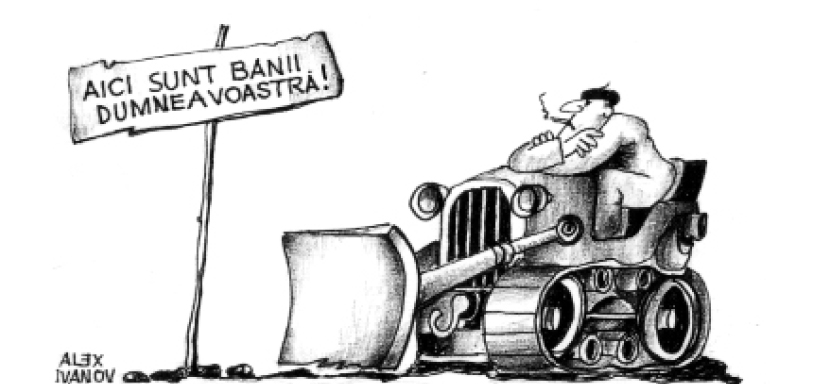

Secolul XXI a găsit R. Moldova nu doar cu vulnerabilități sociale și (geo)politice dar, în strânsă conexiune cu acestea, și mari vulnerabilități economice. Cu excepția câtorva perioade „de sclipire”, economia moldovenească, indiferent de statutele politico-juridice care o susțineau (sau chiar din cauza acestora), nu a fost capabilă să ofere propriei societăți traiul decent pe care aceasta îl merită. Statul bunăstării, forjat pe economii solide și de care beneficiază cetățeni din multe entități centrale, rămâne pentru majoritatea cetățenilor moldoveni un „pământ promis”, iar economia periferică subdezvoltată nu-și poate permite, cel puțin pe termen scurt, să le asigure un asemenea „lux”, indiferent de retorica asociată campaniilor electorale.
Categoria de periferie și asumpțiile teoretice care o însoțesc este o realizare a teoriilor dependenței care cunosc clipa de glorie în anii 70-80 ai secolului trecut. Argumentând existența unei structuri internaționale ierarhice — centrul si periferia — acestea, deși neomogene, dezvoltă un amplu mecanism prin care centrul sistemului exploatează periferia prin intermediul comerțului inechitabil conjugat cu Companiile și instituțiile financiare internaționale. Astfel, cu structuri de producție substanțial diferite — centrul are o economie omogenă și diversificată, în vreme ce periferia devine, în urma integrării în sistemul economic mondial, specializată și eterogenă -, surplusul din periferia subdezvoltată este absorbit de către centru. Centrul, prin urmare, se face vinovat de perpetuarea subdezvoltării periferiei.1
Ulterior, aceste teorii au fost ținta multor critici venite din interiorul diferitelor paradigme ale relațiilor internaționale care au acuzat unilateralismul enunțurilor expuse dar, totodată, multe categorii de asumpții au fost împrumutate de la acestea și uneori, combinate cu „reflecții realiste” asupra structurii internaționale. Faptul că regiuni ca Asia de Est au beneficiat pe deplin de această ierarhizare mondială, nu țin în picioare multe dintre aceste enunțuri și reflectă mai degrabă o serie de factori, inclusiv politici, care sunt cel puțin la fel de culpabili de subdezvoltare periferiei. Nu îmbrățișam, dealtfel, în întregime aceste teorii, însă, unele categorii ale acestora, în combinație cu o serie de alți factori, permit evidențierea unor imperfecțiuni ale economiei moldovenești.
Din cele mai vechi timpuri economia moldovenească, ca și a întregului spațiu etnocultural românesc, a fost legată de ciclurile economico-comerciale din zona Mării Negre și asigurând tranzitul comercial al comerțului înfloritor pontic, cunoștea un relativ proces de dezvoltare. Statul feudal apărut în secolul al XIV-lea, continuă această creștere economică susținută. Se baza pe un sistem fiscal centralizat, care împreună cu vămile și minele de sare alcătuiau sursele principale de completare a vistieriei. Treptat se intensifică producția agricolă și meșteșugărească, precum și o rețea internă de piețe și rute comerciale. Iar împreună cu Valahia și Transilvania puneau bazele unui ansamblu geoeconomic românesc în sud-estul Europei.
Influența Otomană începând cu secolul al XVI-lea, duce la slăbirea treptată a acelor realizări economice care se articulau în Moldova și în întregul ansamblu geoeconomic menționat mai sus. Mai întâi, cucerirea de către otomani a porturilor de la Marea Neagră deturnează rutele comerciale internaționale ce traversau Moldova, având ca efect scăderea veniturilor vamale și împiedicarea dezvoltării industriei de export locale. Mai apoi, impozitarea excesivă a economiei, care să aprovizioneze mașina de război otomană (mai târziu și cea rusească) reduce la minim volumul investițiunilor locale. Cucerirea, la 1812, de către Imperiul Rus, nu aduce schimbări de substanță în economia Basarabiei, iar aspectele benefice ale capitalismului occidental nu dădeau rădăcini în regiune. Basarabia devine, astfel2, o periferie agricolă intens exploatată în Imperiul țarist. Noua orientare a rutelor comerciale a fost conturată de rețeaua de căi ferate, construite în a doua jumătate a secolului al XIX-lea, îndreptate către Odessa și Transnistria. Aceasta a contribuit mult la faptul că nici revoluția industrială târzie din estul Europei, al cărei ecou a ajuns până în guberniile rusești centrale, nu a prins în regiune. Producția industrială nesemnificativă, dominată de micile ateliere meșteșugărești, împreună cu agricultura puțin performantă alcătuiau întreaga economie. În timpul scurtei perioade istorice când Basarabia revine la spațiul românesc se observă tentative, adevărat nu întotdeauna reușite, de relansare a economiei regiunii, însă nici conjunctura internațională, nici potențialul României și cu atât mai puțin timpul, nu au permis obținerea unor rezultate semnificative. Recucerirea teritoriului de către Rusia Sovietică și experiența economiei planificate au înrăutățit în multe privințe situația economică. Doar anii „brejenviști” au îmbunătățit ușor situația social-economică. De la Imperiul țarist s-a păstrat tradiția unei periferii furnizoare de produse alimentare și a unei zone tranzitorii industriale și de prelucrare în Transilvania. Programul de industrializare a concentrat cele mai importante sectoare industriale — producerea oțelului, energiei electrice, mașinilor — pe malul stâng al Nistrului, astfel încât în anul 1989 cca 40% din PIB-ul moldovenesc își avea originea în aceasta zonă. Aparent, includerea Basarabiei în economia sovietică avea o latură stimulatoare. Economia Moldovei era aprovizionată cu resurse energetice și materii prime la prețuri mult mai mici decât cele mondiale si, în același timp, republica avea pentru mărfurile sale de calitate inferioară o piață de desfacere imensă și stabilă, condiție necesară unei creșteri economice. În fond, însă RSS Moldovenească se izola tot mai mult de piața mondială, devenind dublu dependentă de Rusia, atât în ceea ce privește aprovizionarea cu resurse energetice, cât și în ceea ce privește piețele de desfacere. Ca urmare a unei asemenea politici, în anii 60-80, RSSM exporta peste hotarele Uniunii Sovietice doar 3-4% din volumul produselor ce nu se vindeau pe piața internă, ajungând la 5-6% în anii 80. La centru ajungeau cele mai bune produse, iar la magazinele din republică puteai cumpăra doar capuri și copite, carnea se ducea spre Fondul Unional. Astfel, specializată în producția agricolă și industria alimentară, cu o populație ce constituia 1,5% din populația imensului imperiu, RSSM deținea 3,5% din volumul unional al producției agricole și doar 1,2% al celei industriale.
Toată această „trăire economică”, în special după ocupația, de fiecare dată abuzivă, a Basarabiei de către cele două imperii, reflectă tradiția periferică a economiei regiunii. Impunerea unei economii de comandă pe dimensiunea centru-periferie a privat acest teritoriu românesc de orice aspirație de dezvoltare social-economică. Însă, pe fundalul proceselor care au urmat după implozia URSS, experiența sovietică suscită nostalgia multor băștinași.

Destrămarea rapidă a URSS și a integrității economice sovietice a prins noua entitate moldovenească nepregătită de a face fața noului statut dobândit într-o economie mondială în plin proces de globalizare. Nefasta tradiție de „periferie internă” a două Imperii, nu a fost suficientă pentru nomenclatura de la Chișinău, care a preluat puterea, pentru a evita erorile care au expus și mai mult economia țării la mecanismele internaționale de control. Astfel, R. Moldova intră în periferia mondială cu o conducere diletantă și coruptă, care fac tot posibilul de a o menține acolo pentru mult timp înainte. Instituțiile financiare internaționale — FMI și Banca Mondială — înlocuiesc cumva vechile capitale metropolitane în „administrarea economică” și, de când cu conducerile succedate la Chișinău, participă la ceea ce s-a numit tranziția spre economia de piață.
La nivelul legislativ, încă din 1990, Parlamentul țării adoptă „Concepția tranziției la economia de piață reglementată”, iar în 1991 adoptă și „Programul tranziției la economia de piață în RSS Moldovenească”. FMI și Banca Mondială, investite cu buna asigurare a tranzacției în fostele economii planificate, impun o tranziție bruscă — terapia de șoc — în detrimentul uneia graduale. Aceasta presupunea efectuare rapidă, dintr-o singură lovitură, a principalelor obiective ale tranziției — liberalizarea prețurilor și a comerțului exterior; privatizare și demonopolizare economiei. Printr-o asemenea strategie susțineau experții internaționali, se creau condițiile unei relansări rapide, se reducea durata suferințelor provocate de tranziție.3
Liberalizarea a început cu liberalizarea prețurilor, lucru care a provocat o inflație fără precedent — în anii 1992 și 1993 rata anuală a inflației era de cca 1200%,. Toate economiile de-o viață (care mai rămăseseră după afacerea depozitelor din timpul URSS) ale populației s-au redus practic la nimic. Populația a sărăcit peste noapte, iar statul s-a văzut nevoit să lupte cu un inamic necunoscut — hiperinflația — recurgând la stabilizarea prin adoptarea de politici economice restrictive, Programul de macrostabilizare, susținut de FMI și Banca Mondială necesita eforturi financiare suplimentare și Republica Moldova începe a intra în datorii!
Liberalizarea, la fel de bruscă a comerțului care a urmat, s-a efectuat fără a se ține cont de nivelul de competitivitate a bunurilor autohtone. Astfel, deschiderea bruscă a frontierelor economice a dus la invadarea pieței interne de către mărfurile de import, ceea ce a provocat reducerea volumului de producție, iar mai apoi și alimentarea unui număr enorm de întreprinderi autohtone.
Pentru a contracara aceste efecte adverse, în noiembrie 1993 este introdusă moneda națională - leul moldovenesc — și se pune la cale un proces de privatizare, ambele acțiuni menite să relanseze economia. După cum menționam mai sus, liberalizarea prețurilor a lăsat populația fără economii, adică fără mijloacele financiare necesare pentru a participa activ la privatizare. Guvernul „vine în ajutorul” populației și lansează un model rusesc de privatizare — contra bonuri patrimoniale. În urma acestui mecanism, „băieții buni” au strâns rapid bonurile de la populație — ori la prețuri derizorii ori făcând cetățenii acționari minoritari — și au pus mâna pe principalele active ale statului. În mod firesc acestea făceau parte din nomenclatura comunistă care conducea țara. Dacă lupta cu inflația necesita politici restrictive, care descurajau noul mediu de afaceri, iar piața de capital practic inexistentă, jaful legalizat — privatizarea — a constituit ultima picătură în ruinare întreprinderilor (chiar dacă nu erau multe eficiente) existente. Pentru că noii împroprietăriți s-au grăbit să scoată activele din țară și, astfel, în loc să relanseze economia, privatizarea a contribuit la exodul capitalului din țară. Între 3 și 5 mlrd dolari SUA au ieșit din țară în această perioadă. Toate acestea au dus, în mod evident, la o creștere spectaculoasă a șomajului și forța de muncă activă începe să emigreze peste hotare în căutarea unui loc de muncă.
Dacă pe la începutul anului 1997 se spera la depășirea acestei recesiuni, mediul internațional a amintit încă o dată R. Moldova ce înseamnă statutul său. Criza asiatică, ajunsă în 1998 în Rusia, s-a resimțit imediat în economia moldovenească. Leul modovenesc s-a depreciat, aproape de două ori, și au crescut brusc prețurile la toate produsele; multe întreprinderi (dacă mai era cazul) au dat faliment; mii de lucrători au fost aruncați în stradă. Doar în rezultatul acestei crize financiare, ponderea celor săraci în Moldova crește de la 35%, la mijlocul anului 1997, până la 56% la mijlocul anului 19994. Iar programul „Pământ” din 1998 de împroprietărire a țăranilor cu pământ a fost un semi-eșec. Pentru că parcelarea pământului în cote părți (de 1,2 hectare) și lipsa ajutorului din partea statului (tehnologie, semințe, etc.) a dus la degradarea sectorului agricol. Mulți țărani, presați de dobânzile împovărătoare ale băncilor comerciale, au rămas fără locuințe după tentative de a produce singuri pe propriile cote de pământ. Alții, însă, care și-au dat pământul la asociații, au fost de cele mai multe ori victimele unor așa numiți „lideri” care au semnat contracte de arendă cu populația prin care se manifestă apogeul ipocriziei neoburgheziei locale. Culmea este că autoritățile nu se implică în economia de piață.
Acestea sunt, succint, efectele tranziției moldovenești, iar în loc de concluzii vrem să aducem o cifră, mai mult decât sugestivă, în estimarea primului deceniu de tranziție. Produsul Intern Brut (PIB) constituia în anul 1999 doar 33% din cel al anului 1990. Nici cele doua războaie mondiale nu se compară, ca efect economic, cu tranziția moldovenească!
1 Pentru o analiză utilă vezi Guzzini Stefano, Realism și relații internaționale, Iași, Institutul European, 2001, p. 306-316
2 Șofransky Octavian, Republica Moldova: Capital geopolitic, Chișinău: Cartier, 1999, p. 19
3 Pentru o analiză critică a acestor politici ale MFI, vezi: Stiglitz Joseph, Globalizarea. Speranțe și deziluzii, București, Editura Economică, 2005.
4 Perehodnâi period: analiz i uroki pervogo desiatiletia. Dlia sean Vastocinoi Europî i Bâvșego Sovietskogo Soiuza, Moskvo: Veisi Mir, 2002, p.68.